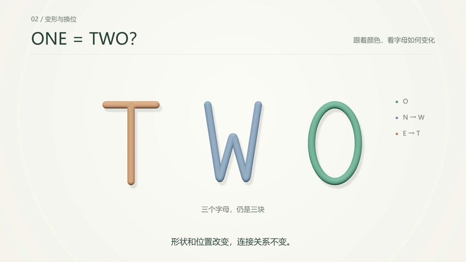
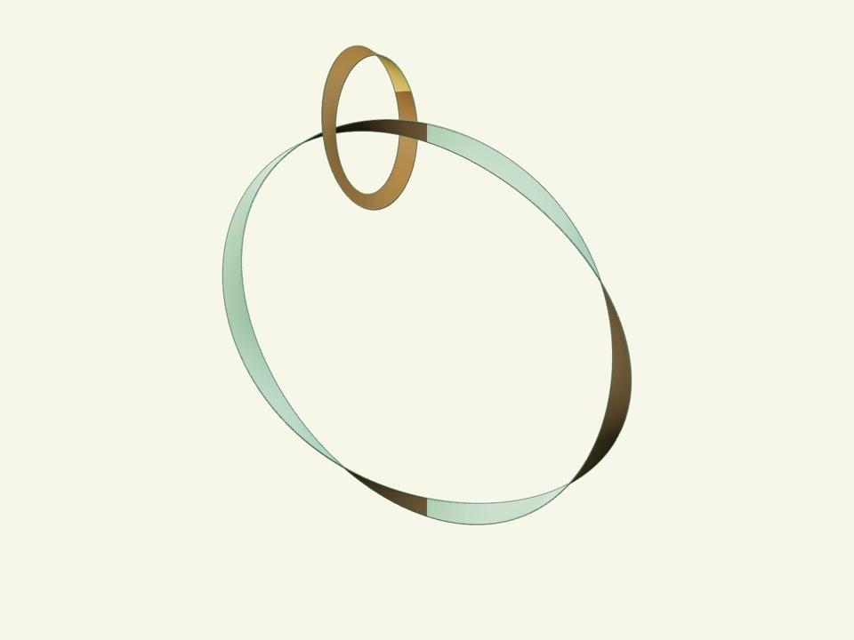
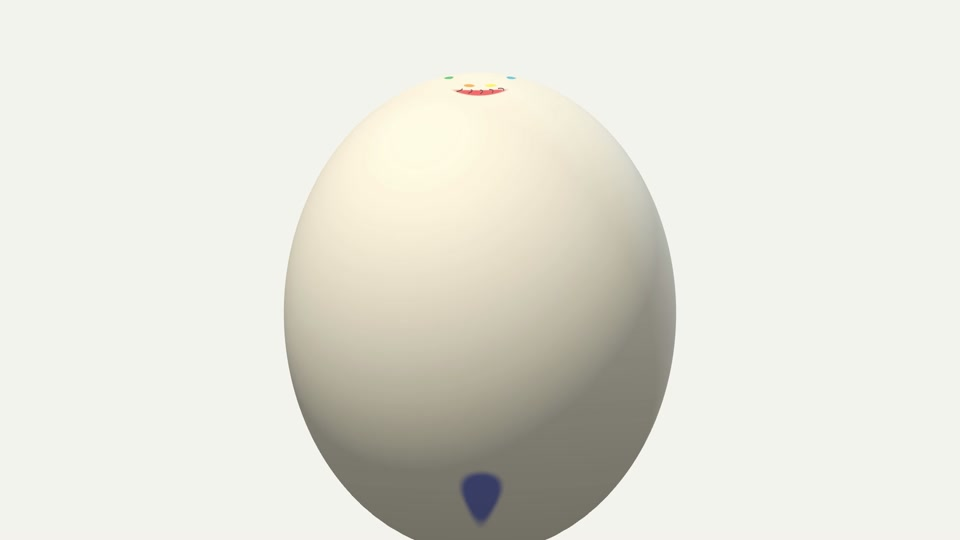
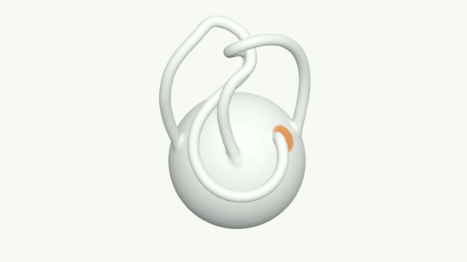
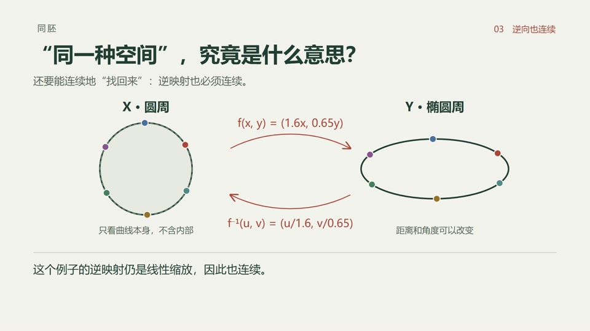
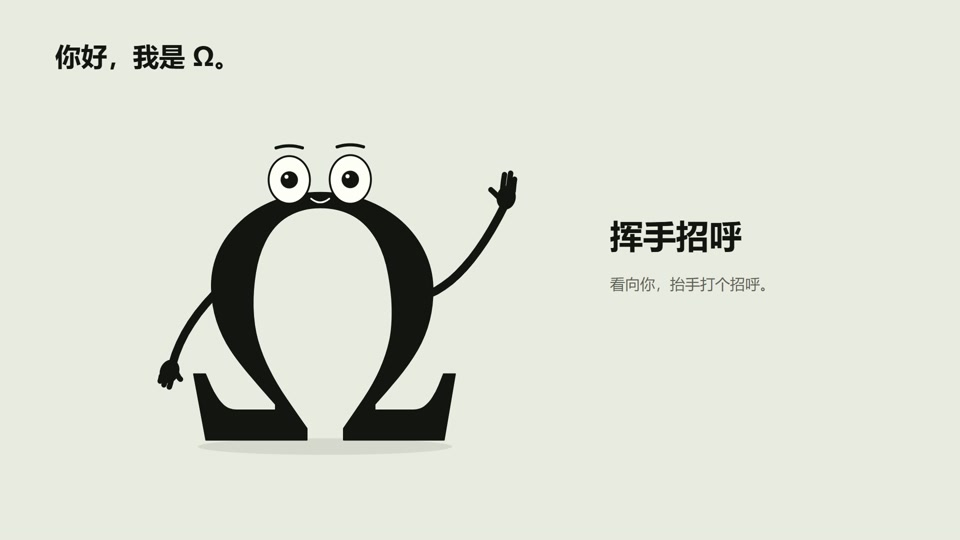

字形拓扑 · 00:33
暖白、圆润笔画、柔和体积与稳定的对象色。

点击色块复制色值 · 源码原值，非截图吸色
从 O、N、E 到新的形态，保持对象身份。颜色与标签、位置或形状共同说明对应关系。
人体案例的七色属于表面标记。它们保留自己的含义，不作为每个场景都需要的装饰色。
保留原画幅与原色 · 下方展示六处实际成片
暖白、圆润笔画、柔和体积与稳定的对象色。

青绿正面、棕色背面、赭金局部对象。

中性实体与七色追踪；材质服务于表面辨识。

圆润哑光、中性形体与少量连接区标记。

深灰绿正文、陶红关系强调与清楚的映射。

保留角色原来的墨色轮廓与眼白。
本机 Manim CE 0.21.0 · 实际静态渲染
先确定对象、变量与状态，再分配颜色。形变与换位后保留身份；不因换场景而无故改色。
圆润哑光、清楚的朝向与柔和明暗。二维公式保持清晰，必要的边界与切口有足够对比。
全屏几何、局部对照、公式与角色可以采用不同构图。停顿、强调与运镜各自服务于当前讲解。
保持连接，观察变化。
中文无衬线 · 深灰绿正文 · 数学公式按实际画面校准
标题 68 px说明 34 px注释 28 px以上为 1920×1080 的起始值；公式字号与图形比例按场景调整。
tokens.json — 颜色、语义、材质与来源
tokens.css / tokens.js — 浏览器、SVG、Canvas 与 Three.js
adapters/manim_theme.py — Manim 辅助函数